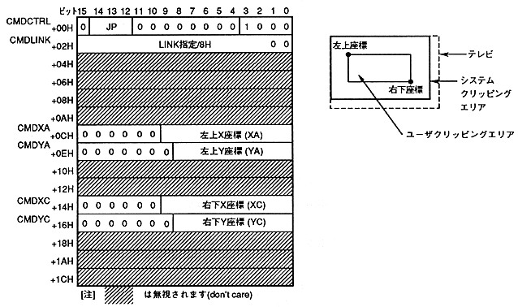

User clipping can be set freely by software. User clipping coordinate setting command when the command selection bit is 1000B.
The contents of the user clipping coordinate setting command table are as follows.

The user clipping coordinate setting command is defined as follows.
- If the end bit is set to 0B and the command selection bit is set to 1000B, it becomes a user clipping coordinate setting command.
- Specify the jump format. When the jump format is assign or call, divide the address of the command table to be processed next by 8H and set to CMDLINK.
- The upper left coordinate of the clipping area is defined as vertex (A) (CMDXA, CMDYA), and the lower right coordinate is defined as vertex (C) (CMDXC, CMDYC). The rectangle (rectangle) represented by the upper left coordinates (XA, YA) and lower right coordinates (XC, YC) is the clipping area. Whether to enable user clipping, drawing inside, or drawing outside is set in the drawing mode of the drawing command of the part.